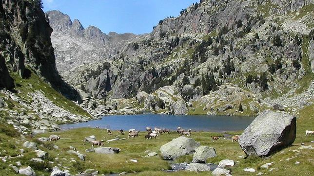

En esta sección de nuestra página vamos a encontrar diferentes imágenes sobre lugares exóticos de España
Parque Nacional de Aigüestortes y Lago de San Mauricio, Lérida

Horizontes volcánicos, desérticos, repletos de lagos, islas solitarias, parques arqueológicos y una flora y fauna exuberante. Sin necesidad de salir del país podemos ser testigos de la magia de la naturaleza visitando uno de estos diez paisajes que son puro espectáculo. En cada uno de ellos, además, tendremos la oportunidad de conocer la cultura y gastronomía de la tierra, un valor añadido en cada rincón del territorio español. Estos lugares son mágicos, hay que verlos, al menos una vez en la vida.
Bardenas Reales, Navarra
No es de extrañar que cineastas como el gran Ridley Scott hayan rodado aquí, las Bárdenas Reales son un paisaje de película. En el sureste de Navarra, en la depresión del Ebro, se extiende este singular paraje semidesértico, lleno de caprichosas formas rojizas esculpidas por el agua, la arcilla y la caliza. Este paisaje desnudo e inhóspito propio de otras latitudes, dibuja laderas cortadas, planas mesetas, profundos barrancos y solitarios cerros, inspiración de pintores y escritores y refugio de bandoleros. La rojez de la arenisca nos ofrece un espectáculo inigualable especialmente cuando el sol cae en el horizonte.
Las Médulas, León
Fueron las mayores explotaciones de oro a cielo abierto que los romanos poseyeron en Hispania y dieron lugar a un entorno paisajístico espectacular. El verde intenso de los castaños, robles y escobas (arbusto típico en la zona) contrastan con los colores rojizos y anaranjados del terreno excavado, de elevaciones montañosas, y de curiosas formaciones arenosas integradas hermosamente con la vegetación. El conjunto muestra un tapiz grandioso e inigualable surgido gracias a la combinación perfecta entre la naturaleza y la mano del hombre. Es tal la belleza de las Médulas que han sido declaradas Patrimonio de la Humanidad.
Parque Nacional de Ordesa y Monte Perdido, Huesca
Este Parque Nacional juega con el encanto de los contrastes: desde el hipnótico verde de los valles, hasta la extrema aridez de las zonas más altas, con un protagonista indiscutible, el Monte Perdido, un pico de 3.555 metros de altrua. Los ríos Arazas y Bellós trazan los verdes valles de donde parten los senderos que conducen a las zonas áridas más altas, pudiendo contemplar un paisaje de contrastes entre los cuales se divisan las casas típicas del Alto Aragón, de tejados de losa de arenisca, paredes de piedra y chimeneas coronadas con los curiosos espantabrujas, unas piedras de forma cónica que se colocaban antiguamente para evitar la entrada de maleficios.